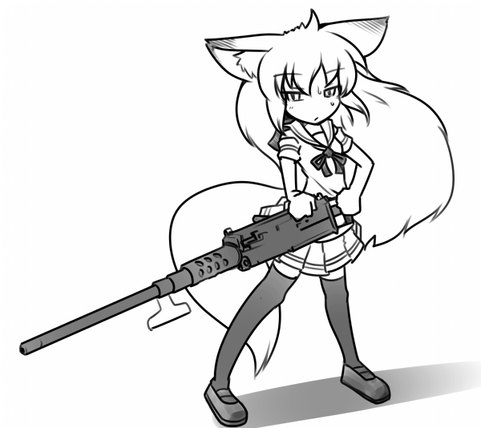

|
微かに冷たい風が吹いていく。 どこをどう逃げたのかはよく覚えていないが、周囲を見ると寂れた工場街だった。灰色の工場や倉庫が並んでいる。鼻をくすぐる金属と油の匂い。休日という事もあり、どこも無人のようだった。 空を見ると灰色の雲に覆われている。さっきまで晴れていたというのに。 「なぜこんな場所に。この辺りにこんな場所、あっただろうか？」 疑問が浮かぶが、それはどうでもいい。 怖いくらいに人気のない道路に立ったまま、サキツネは背中の武器庫に手を入れた。並の銃器や刃物は通じないことは、身に染みて理解している。 もそもそと道具を漁ってから、取り出したのはゴツい機関銃だった。  ブローニングM2重機関銃。.50口径の弾丸を連射する、有名な兵器だ。普通は三人以上で運用するのだが、これは一人でも使えるようグリップなどが付け加えられた超改造品。大量の弾帯を身体に巻き付けて、両手で構える。 「あの女は必ず来る」 前後、左右、上、真下…… 順番に視線を飛ばしてから、正面に目を戻し。 「！」 目を見開き、息を止めた。ぞわりと尻尾の毛が逆立つ。 すぐ目の前に女がいた。いつ、どこから、どのように現れたのか見当すら付かない。だがとにかく、女がいた。右手に鋸鉈を持ち、足音も気配も無く。 サキツネは咄嗟に銃口を向けてトリガーを引く。火薬が爆裂して、大口径の弾丸を立て続けにぶっ放した。全身に跳ね返る、重く鋭い衝撃。 背後にあったブロック塀に大穴が穿たれる。 「相変わらず銃刀法違反ですね」 しかし、予想通りというか――放たれた弾丸は空を切った。超音速の弾丸を、女はあっさり見切って躱している。長い黒髪をなびかせ、凄まじい速度で接近してきた。 振り抜かれる鋸鉈。鈍い銀色の刃が、猛獣の牙のように閃く。 サキツネは咄嗟に機関銃で刃を受け止めた。 「……強度が足りない！」 思った時には既に終わっていた。 鋼鉄製の機関銃が斬り裂かれる。段ボール細工のようにあっさりと。壊れ、削られ、いくつもの破片となって散らばった。もう使い物にはならない。 次の瞬間には、鋸鉈がサキツネの右肩口に食い込んでいた。分厚い刃が、セーラー服の袖を斬り、皮膚を裂き、筋肉を抉り、骨を砕いて、再び筋肉を削り、皮膚を裂く。 結果、右腕が根元から斬り離された。 腕が地面に落ちていく―― それを見届ける暇もなく、背中に激痛が走った。苦痛は無く、ただ情報が脳に届く。女が振り抜いた鋸鉈が、背中を大きく抉り飛ばしていた。血と肉片が飛び散る。 「マヂで痛……いぃ――」 予想通りの激痛に涙を流すが、痛がっている時間は無かった。 ゴキ。 鈍い音が響く。女の蹴りが右膝に打ち込まれた。躊躇無い関節破壊。膝を構成する骨や腱が砕かれ、右足が本来曲がらない方向に曲がる。 足を壊され、動きが完全に止まった。 駄目押しとばかりに、後ろ回し蹴りが胸に叩き込まれる。 「がッ……！」 肺から空気が漏れた。サキツネは口を大きく開き、身体を強張らせる。鉄骨を叩き付けられたような豪打。それを防ぐべき右腕は無い。体内に響く、肋骨の砕ける異音。 だが、それより一拍速く。 漆黒の刃が女に斬り込んでいた。 左手に握られた、黒い刀身を持つ打刀。無意識に武器庫から取り出した、とっておきの武器。漆黒の切先が、女のみぞおちのやや上から左脇腹まで斜めに斬り抜ける。手応えからして、横隔膜と肋骨、肝臓に斬り込んだ。 「その黒刀は、ムラマサ……？」 女の顔に映る、驚きの表情。 冗談のような勢いで、サキツネは吹っ飛んでいた。受け身も取れずにブロック塀に激突する。身体に巻き付けてた弾帯が千切れて、銃弾が飛沫のように散らばった。真っ二つ切断されたM2機関銃が地面に転がる。どちらも自分にとってはもう意味が無い。 ブロック塀を打ち壊し、その向こうの駐車場へと転がっていった。 何度か転がってから、大の字に倒れて止まる。 空では灰色の雲が他人事のようにゆっくりと流れていた。地上で起こる惨劇など気にも留めず、雲はただ風に身を任せている。 「さて、どうしたものか？」 生存本能に任せて、上体を起こした。頭を切ったのか、額から血が流れ落ちていく。咳とともに、口から吐き出される血。右腕は根元から斬られ、背中にも大きな裂傷、肋骨も折れて肺に突き刺さっているようだ。右膝も壊れて、立つ事もままならない。 一瞬で満身創痍の有様である。 「しかし……なぜ、こんな事に？ 食い物の恨みは恐ろしい、ホント」 半ば自棄気味に、しみじみと現状を噛み締める。 道に落ちている右腕が、不規則に痙攣していた。斬られた腕の根元からは、冗談のような勢いで血が噴き出している。上腕動脈切断による出血だ。 「まさに出血大サービス」 下らないことを言いつつ周囲を見るが、女の姿は無い。 サキツネは左手を持ち上げた。 刀は手放していない。刀身全体を黒漆で塗ったような黒い刀。柄は白い。どこで入手したのかは覚えていないが、斬鉄剣並によく斬れる刃物だった。 切先から血のしずくが落ちる。 「……この刀は通じる。だがしかし、勝てる気がしない。逃げることも無理。戦うのも無理。謝っても許して貰えるとも思えない。万事休すの八方塞がり、背水の陣」 刀を持ったまま、周囲を見る。 それなりに広い駐車場だった。休日なので車は置かれていない。うっすらと冷たい風が吹き、癖毛を僅かに揺らめかせる。駐車場の隅には『双見技研社員専用駐車場』の看板。近くには砕けたコンクリートの破片が落ちていた。 流れ出る血が、アスファルトを赤黒く染めている。 「この黒刀は、妖刀叢正の一振りでしょうか？」 声が聞こえてきた。背後から。 「斬れ味からして本物のようですね……。あれは全部回収されたと聞いていましたけど、未回収品でしょうか？ まさか回収品の横流し？ キツネさん、それをどこで手に入れたのか、喋ってもらいますよ」 勝手に話を進めていく女。 何を言っているかはよく分からないが、とりあえずこの黒刀が凄く危険なものとは理解した。しかも尋問は決定事項で、さらに喋らせるのに手段は選ばないだろう。 サキツネは黄色い目を見開いた。 「――手負いの狐は、ジャッカルよりも凶暴だ！ たぶん」 文字通りの生命の危機に、全身のリミッターが解除される。脳内に大量のアドレナリンが吹き出し、痛みが消え、全身に異様な力が漲った。尻尾を立て、歯を食いしばる。 「残された選択肢はひとつ。ここで、あのバケモノを殺るしかない！」 折れた右膝を無視して跳ね起き、声のした辺りに向かって刀を振り抜いた。 だが、予想に反して女はいない。 「――あれ？」 代わりにあったのは、銃弾だった。 さっき飛び散った.50BMG弾が十数発。棒手裏のように飛んでくる。実際、女が拾って投げたのだろう。その弾頭全てが、自分に向いていた。無機質な殺気の矢。 「これは、まずいかも？」 狐耳と尻尾を垂らし、頬を引きつらせる。 パッ！ 白光が閃き、薬莢の火薬が爆ぜた。 構造上、銃弾は実包のままでも発射できる。銃身による加速が無いため威力は落ちるものの、それでも一撃で人体を粉砕する弾丸の破壊力は高かった。 放たれたフルメタルジャケットの弾丸が身体を貫通する。 当たった弾丸は七発。数は直感的に理解した。 だが、悠長に痛がってる暇は無い。 「痛い……けど、これはあくまでも陽動。来る……！」 再び振り向いた先に女がいた。 出血によって白いワンピースを赤く染めている。その姿は、誇張抜きにホラーゲームに出てくるクリーチャーだった。黒髪をなびかせ、音も無く突進してくる。 「この女は覚悟して来てる……。人を殺そうとするという事は、逆に殺されるかもしれないという危険を常に覚悟して来ている人――」 その首筋を狙い、黒刀を横薙ぎに振り抜く。 硬い手応えが返ってきた。金属同士のぶつかり合う、甲高い音。女が右手で逆手に構えた鋸鉈が、刃を受け止めている。だが、刃としての性能は、黒刀の方が勝っていた。鋼鉄の凶器に太刀筋を逸らされながらも、鋸鉈を切断し、女の右胸へと刃を斬り込む。 肋骨を斬り、肺まで達する刃。 ……が、そこまでだった。刃が止まる。 斬られた鋸鉈の刃が落ちる音が、やけに大きく聞こえた。 「捕まえました」 女が笑った。白い衣服を血で赤く染めながら、嬉しそうに。 左手に握られた鋸鉈。右手に持っていたものと同形状の武器だった。 「あ。やば――」 その凶刃が、サキツネの左肩に叩き付けられる。鉈のような重さに、鎖骨と肩胛骨が砕かれ、引き抜かれた鋸刃によって周辺の筋肉、血管、神経が削ぎ裂かれた。意外と殺傷力は低い――女の言葉通り、鋸鉈は肩を破壊すだけで終わった。 充分に重傷であるが。 駄目押しとばかりに、翻った鋸刃が左前腕を抉る。皮膚が裂かれ、筋肉と腱、そして前腕動脈が削り斬られた。手の力が抜け、白い柄から手が離れる。 女の胸から抜けた黒刀が、地面に落ちた。乾いた音が響く。 右腕は無く、左腕は動かない。武器を取り出せない、無防備状態。 「攻撃は無理。防御も無理。逃げるのも無理。絶対絶命のピンチ……！」 辛うじて動く左足で、サキツネは後退る。 だが、二本の鋸鉈が閃き、太股を削った。鋸歯のような刀身が、皮膚を肉を血管を乱雑に斬り裂き、さらに骨にまで亀裂を走らせる。両腕に続き、両足も壊された。 背筋に悪寒が走る。 まだ終わらない。 女が右手の斬られた鋸鉈を捨て、右手を掌底の形に構えた。右足を踏み出し、左足で地面を蹴り、腰から上半身を捻り、流れるような動作で右手を突き出す。突進に全体重を載せた、お手本のような突き。 掌底がサキツネの胸に撃ち込まれた。 「おﾞ……」 視界が跳ねる。 震動が、全身を駆け抜けた。胸から手足、狐耳や尻尾の末端まで。細胞まで浸み込むような、異様に重い打撃。一番最初に喰らった掌打と同じ一撃――震動を用いて相手を攻撃する技だと、本能的に理解する。ただ、今回は完全に"入った" 「あ――あﾞがッ……」 視界が霞み、神経が悲鳴を上げる。 打撃の狙いは心臓だった。震動打撃によって、心筋の脈拍が大きく乱れる。それは一般的に心臓発作と呼ばれる症状。生物に取っては致命的なダメージとなる。 「あ……ぅ。詰ん、だ……」 他人事のように考えながら、サキツネは思考を放棄した。 全身に無事な箇所は無く、その場に崩れ落ちる。 ――寸前に、女の右手が喉を鷲掴みにしていた。誇張抜きで首の骨を握り潰すような握力を以て。気道が締め付けられ、呼吸もできない。声も出ない。 静かに女が口を開いた。 「さて、質問です。キツネさん、この刀は……う、けほっ」 女が横を向いて咳き込んだ。口から吐き出される血。先ほどの黒刀が、肺を傷付けたせいだろう。その状態で動くのは人間には不可能だが、この女は人間ではないので、平気なようだった。 右胸から出血しているが、やはり気にも留めていない。 水色のジャケットと白いワンピースが、血の色に染まっている。 口元の血を舌で舐め取り、改めて問いかけてきた。地面に落ちた黒刀を目で示し、 「えっと、この刀はどこで手に入れましたか？」 女に首を掴まれたまま、倒れることもできない。 苦痛が限界を超えて、もう痛みも何も感じなかった。意識が妙に冷たくなっていく。 （今、どういう状況……？） 切り傷擦り傷打撲が無数。右腕切断。背中の裂創。右膝の複合骨折。右肋骨骨折と右肺挫傷。貫通銃創七箇所。左肩の割創と左前腕の裂創。両太股の裂創と大腿骨亀裂骨折。胸部強打による心機能不全。脳震盪、出血多量。 ようするに、瀕死。 女が続ける。 「答えて下さい。黙秘しても無意味ですよ」 （喉締められて声が出ないし） サキツネは必死に目で訴えた。首を締めていることで、声を封じているという自覚が無いようだった。厄介なことに、素で気付いていない様子である。 「ん？」 不意に女が横に目を向けた。 何の脈絡も前触れもなく。 女の顔面に足が叩き込まれた。砲弾のような勢いで繰り出された、飛び蹴り。 手加減無しの一撃に、サキツネから手を放して女が宙を舞った。 「……？」 女を蹴ったのは、二十歳ほどの男だった。足音もなく、着地する。 襟足の長い黒髪で、ハーフフリムの眼鏡を掛けていた。服装は白いジャケットと白いズボンである。そこはかとなく目の前の女と雰囲気が似ていた。 支えを失いその場に崩れるサキツネ。 「だ、れ？」 「……よく生きているな、お前」 呆れたような顔で、男がそう口にした。 妖刀叢正 漆黒の刀身を持つ打刀。呪物の一種で、斬鉄剣のような凄まじい切れ味を持つ。また、その呪力から第一級危険器物に指定されている。 全て回収されたはずだが、なぜかサキツネが一振り持っていた。 |